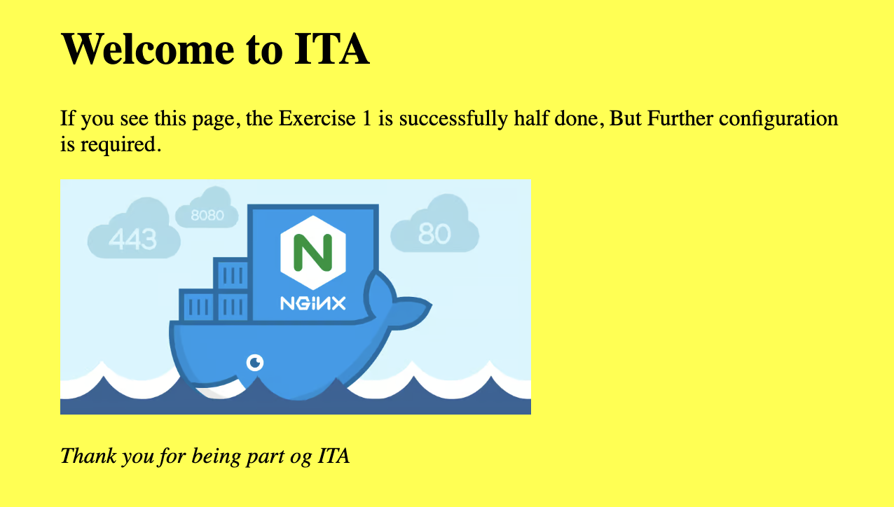

9. Docker
I dag og næste gang skal vi arbejde med docker.
9.1. Læringsmål
Forstå hvad docker er og hvad vi skal bruge det til.
Have en forståelse for hvad Images, Containers og Dockerfiles er og hvordan de relaterer sig til hinanden.
Kunne bygge et docker image med
docker build, og kunne forstå og bruge flags som--nameKunne køre en docker container med
docker run, og kunne forstå og bruge flags som-it -rm -p -d --name --envKunne skrive og bruge en Dockerfil med kommandoerne
FROM, COPY, WORKDIR, RUN, CMDKunne bygge et docker image med
docker build ...Kunne arbejde med et Github workflow der inkludere en Dockerfil.
9.2. Forberedels
Se de første ca. 28 minutter af denne video.
Jeg har sat videoen til at starte 2:26 fra start, da det første ikke er relevant for jer.
Fra 11:54 til 15:29 snakker manden on installation af docker. Det behøver i ikke at se, da i allerede har Docker installeret.
De sidste 20 minutter er en introduktion til Linux, og det har vi jo haft.
Docker Tutorial for Beginners (27:54)
I skal desuden køre disse 2 kommandoer i gitbash (windows) eller terminalen (Mac)
docker pull ubuntu:latest(Dette downloader et ubuntu linux image til din computer)docker pull nginx:latest(Dette downloader et nginx webserver image til din computer)
Vi kommer til at bruge det i undervisningen, men for at undgå kø på skolens netværk skal i gøre det inden vi mødes.
9.3. Dagens indhold
Vi starter med en Michael agtig quiz for at teste jeres forståelse af emnet.
Herefter snakker vi udfra dette Docker CheatSheet
Og laver dernæst en Hello World python/docker applikation sammen.
Og så … øvelserne herunder.
9.4. Materialer
9.4.1. Øvelser
9.4.1.1. Øv 1: Lav en ny startside til din nginx server
Kør kommandoen: docker run -it --rm -p 8080:80 nginx for at starte din nginx webserver.
Hvis du går til http://localhost:8080 kan du se denne side:

Du skal ændre den så den viser din egen html startside. Feks sådan en:

I vil kunne se hvor html filen er placeret i filsystemet her : https://hub.docker.com/_/nginx
HINT: I kender til Linux OS, og i har før redigeret i tekstfiler gennem terminalen.
9.4.1.2. Øv 2: Ændre portnummer på din nginx server
Stop din nginx server container og start den igen men nu så du kan se den via denne url:
http://localhost:9000
Stop din nginx server container og start den igen men nu så du kan se den via denne url:
http://localhost
9.4.1.3. Øv 3: Pull og kør en rigtig app :)
Åben din gitbash, eller terminal. Kør kommandoen:
docker run -it --rm -p 5000:5000 clbo/flask_crud_demo:0.1.0
Hvis det virker kan du i din browser se dene applikation.
http://localhost:5000
Hvis i går ind i containeren gennem terminalen i Docker Desktop, kan i desuden se alle de filer der er i imaged.
9.4.1.4. Øv 3a: Clone fra github og build et image
Clon dette repsotiroy: Koden på Github kan i også finde her
Build et image udfra dets Dockerfil.
Kør en container
Se det i browseren
9.4.1.5. Øv 4: Lav en Dockerfil og et Image
I skal nu lave et docker image som indeholder det flask api projekt som i afleverede i onsdags.
Det betyder at I i jeres projekt skal tilføje en Dockerfil.
Når i har gjort det skal i lave et image udfra den Dockerfil.
Og så skal i køre jeres applikation ved at skrive
docker run .............